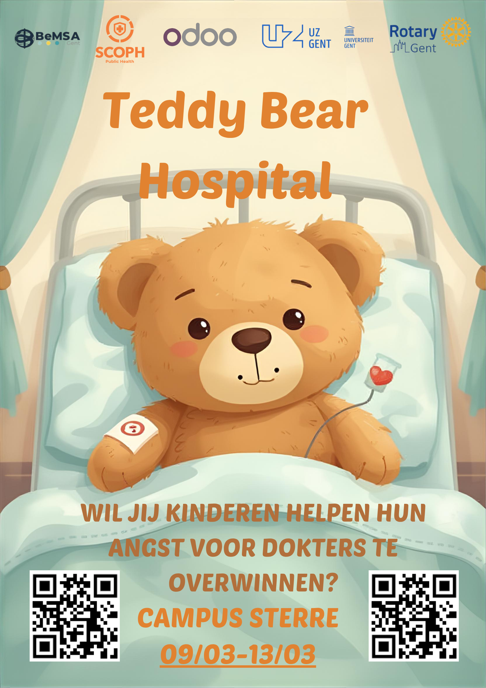

Teddy Bear Hospital
“Teddy Bear Hospital” is a week-long project in which children from the final year of kindergarten and the first years of primary school visit Ghent University Hospital to get acquainted with the medical world. The goal is to help reduce their fear of doctors and hospital environments.
The children bring along their teddy bear, who turns out to be injured. Medical students then “treat” the teddy bears together with the children, making the experience interactive and reassuring. At the end of the visit, the children even get the opportunity to explore an ambulance from Belgian Red Cross.
Schools attend either during the morning or afternoon, allowing volunteer students to register for half-day shifts. No advanced medical knowledge is required, so every student can participate as a volunteer.
For medical students, Teddy Bear Hospital is a valuable opportunity to improve communication and interaction with children in a medical setting. Above all, the enthusiasm, curiosity, and creativity of the children make it an incredibly rewarding experience.